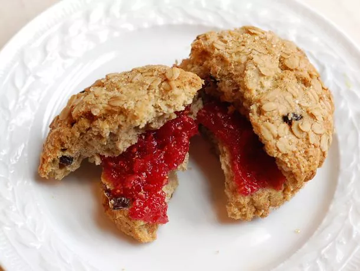

Fig, Raspberry and Lemon Jam Recipe

Description
Taste each individual component, from the fig's subtle perfume, to the bold raspberries, to the tart lemon. The robust flavors would pair perfectly with hearty, flavorful breads like cornbread or crusty sour dough. You could also serve it with oatmeal scones or bran muffins.
Ingredients
- 2 1/4 cups sugar
- 3 teaspoons Pomona's Universal pectin
- 1 pound (2 (8-ounce) packages) fresh black mission figs
- 12 ounces (2 (6-ounce) packages) raspberries
- 1 tablespoon freshly grated zest from about 2 whole lemons
- 1/4 cup freshly squeezed juice from about 2 whole lemons
- 4 teaspoons calcium water (included in the Pomona's packet)
- 1/4 teaspoon unsalted butter
Instructions
- Combine the sugar and pectin in a medium bowl and set aside.
- Trim the stems from the figs and cut the figs into quarters. Put them in a food processor. Pulse until they are finely chopped. Transfer the figs to a large, heavy bottomed pot. Put the raspberries in the food processor and pulse until they are finely chopped. Transfer them to the pot with the figs and add the lemon zest, lemon juice, calcium water, and butter. Bring the mixture to a boil, stirring constantly. Add the sugar-pectin mixture and return to a boil. Boil hard for one minute.
- Remove the pot from the heat and skim any foam from the surface of the jam with a cold metal spoon. Ladle the jam into hot sterilized jars and process them in a hot water bath for 10 minutes.
Home